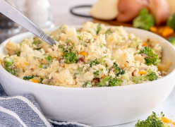
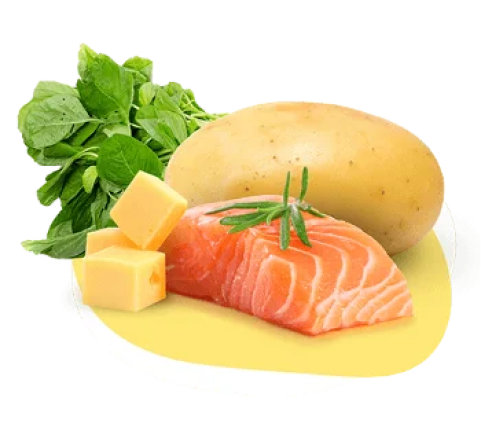

Broccoli Bliss Puree
Whip up a healthy broccoli puree for your baby by boiling fresh broccoli until soft, blending it with water, and enhancing it with olive oil for extra flavor. This quick recipe provides essential nutrients for growth and introduces exciting taste variations in the early stages of solid feeding.
6 Month +
Carrot And Potato Porridge
Whip up a nutritious carrot and potato complementary food for your baby by steaming, mashing, and serving this delightful blend. Packed with sweet flavors, and essential nutrients like vitamin A and carbohydrates, it will supporting your baby's optimal growth.
1 Year+
Sweet Corn Porridge
Sweet Corn Porridge introduces delightful flavors to your baby's menu while offering essential nutrients for growth and development. The natural sweetness of corn pleases their palate, and it's easily digestible when served with a soft texture.
6 Month +
Multigrain Vegetable Porridge
Create a nutritious multigrain porridge by combining red rice, quinoa, and green lentils. Add chopped carrots, spinach, and butternut squash for flavor and nutrients. Simmer in vegetable broth, then puree or mash for a delightful texture and essential nutrition for your little one.
1 Year+
Banana and Avocado Puree
Blend ripe bananas and avocados for a delicious, nutritious puree. It offers natural sweetness, smooth texture, and essential healthy fats for brain development. Serve as a complementary food or a healthy snack for your little one.
6 Month +

Broccoli and Cheese Mashed Potato
Make a nutrient-rich multigrain porridge with red rice, quinoa, and green lentils. Add veggies, simmer, then mash for essential nutrition. Blend bananas and avocados for a sweet, smooth puree, perfect as a snack or complementary food for your little one.
1 Year+
POPULAR MENU
BluesX: Cherishing Baby's Mealtime Bliss
Experience the pure joy of your baby savoring every bite with BluesX. Our delightful dining moments are a celebration of innocence and happiness, making mealtime a cherished experience filled with smiles and laughter.

Daily Delights – Wholesome Complementary Food Recipes for Parents
Explore BluesX's curated collection of nutrient-packed complementary food recipes, designed to provide essential nourishment for your baby's early development. Elevate mealtime with our convenient and wholesome options, crafted to support breastfeeding mothers and their little ones.
Read More
Wholesome Nutrition for Your Baby"
BluesX provides top-notch nutrition to ensure your baby's healthy development. Our carefully curated meals are packed with essential nutrients, fostering your little one's growth and well-being. Choose BluesX for nourishing your baby with the best
Read More

Stay connected and be part of our community!
Lisa
user